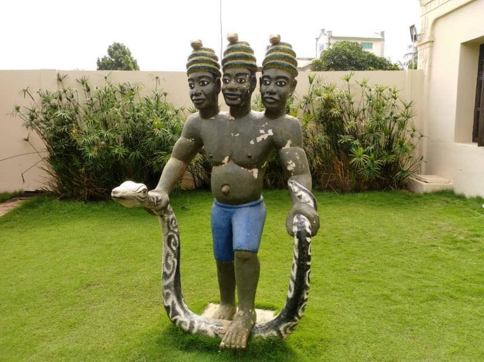
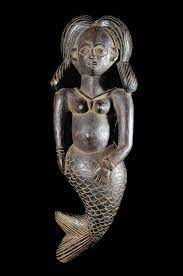
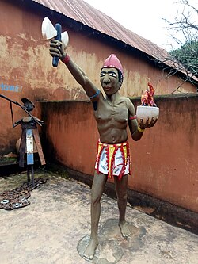
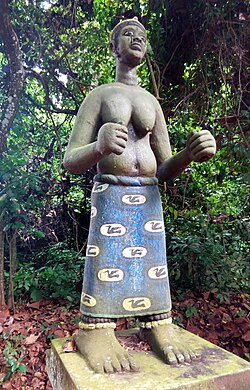
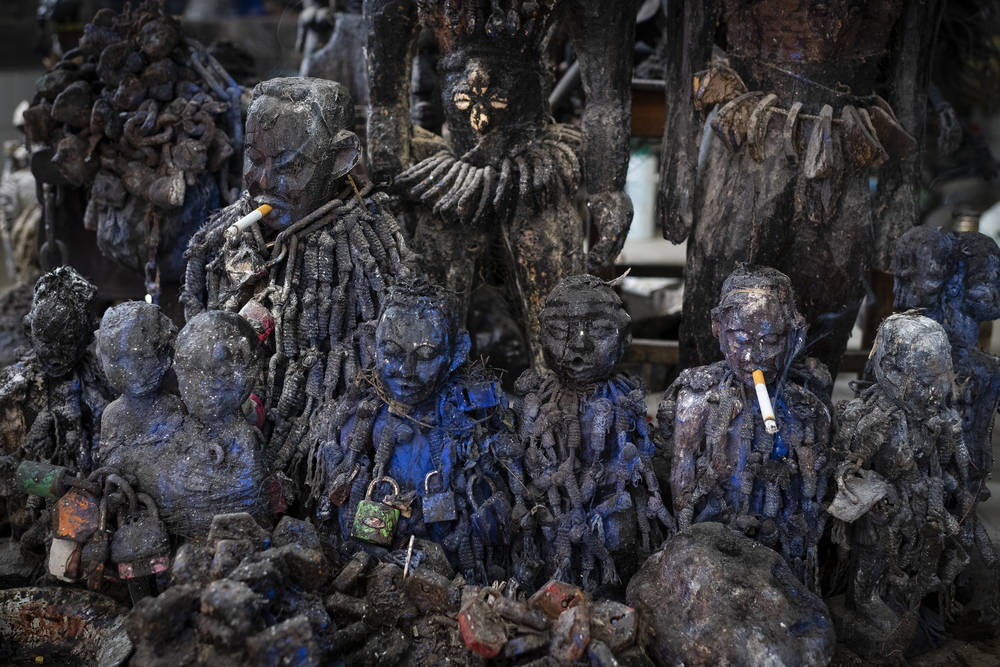

Dan
Symbole du serpent arc-en-ciel, Dan est associé à la prospérité, à la continuité et à l’équilibre.
Découvrez quelques divinités et représentations vodoun qui occupent une place importante dans les croyances, les cérémonies et l’identité culturelle béninoise.
Une sélection d’éléments vodoun à explorer.

Symbole du serpent arc-en-ciel, Dan est associé à la prospérité, à la continuité et à l’équilibre.

Figure liée à l’eau, à la beauté et aux forces mystérieuses des rivières, mers et lagunes.

Divinité du tonnerre et de la justice, présente dans plusieurs traditions du sud du Bénin.

Divinité de la terre, souvent associée à la santé, aux maladies et à la protection communautaire.

Gardien des passages et des carrefours, il occupe une fonction d’intermédiaire spirituel.

Objets rituels et espaces sacrés qui matérialisent des liens entre humains, ancêtres et divinités.
Envie de continuer l’exploration culturelle ? Parcourez les autres catégories de BeninCulture.
Retour à Découvrez